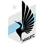

概述
随着多位世界足球巨星选择到美国足球职业大联盟延续自己的足球生涯， 美国足球职业大联盟精彩程度得到了提高，关注度随之得到提升,近年的平均上座率已经超越意甲。
美职联参照了很多NBA的比赛模式，同样分为东、西部两区，采用同样的常规赛和季后赛的双重联赛模式， 常规赛结束后分别列出分区积分榜和总积分榜。季后赛采取双回合淘汰制，决出东西两部冠军，最后将由东部冠军与西部冠军争夺赛季总冠军， 总决赛采取单场淘汰制。
由于赛制的原因，美职联的总冠军归属总是充满着悬念，进球数较多，受到了广大彩民的青睐，2017赛季第一场比赛将会在3月4日正式开打， 彩民朋友们不容错过。
东部
East


西部
West
- 